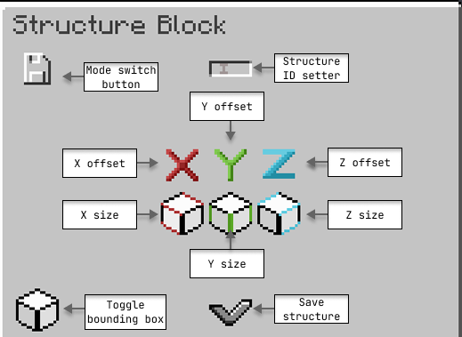
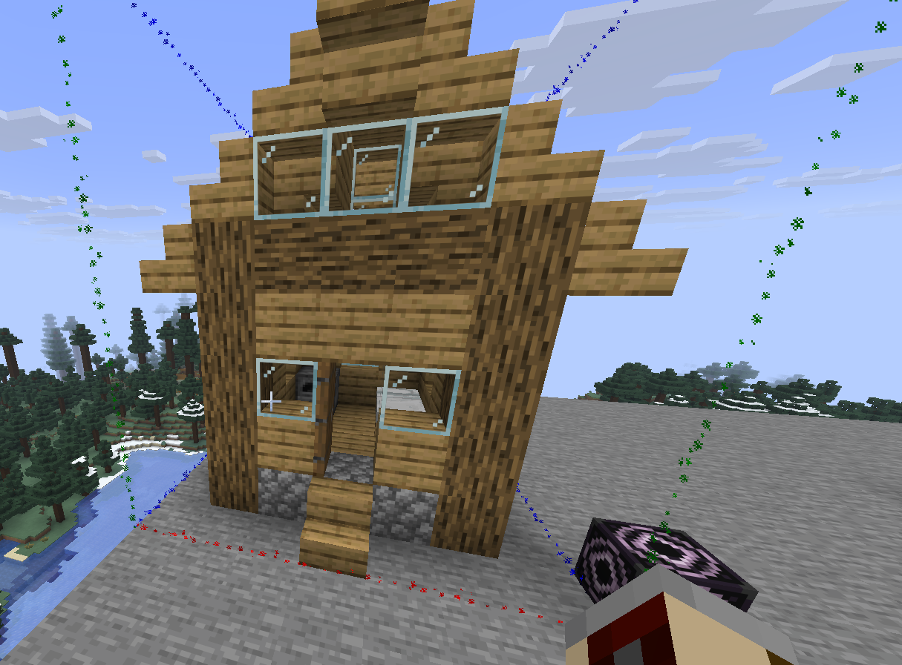
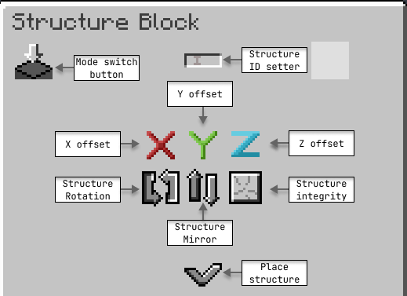
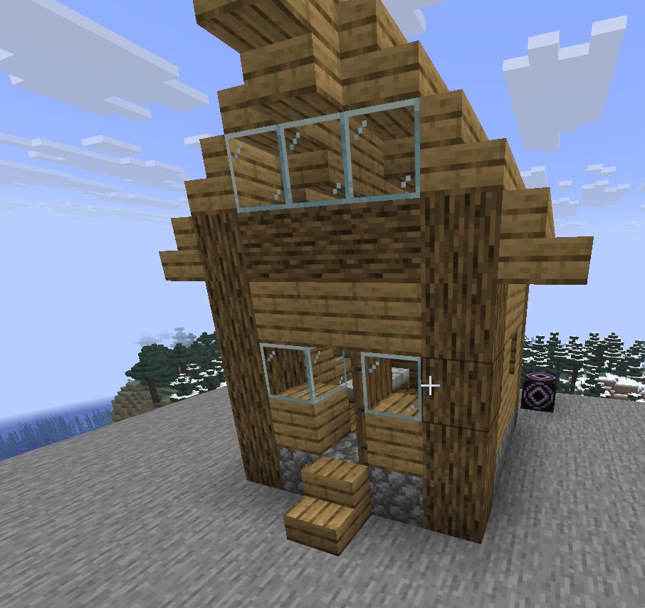

Structures
The Structure API allows you to save and place multi-block structures exactly like vanilla Minecraft, with full support for custom blocks.
Saving a structure
To save a structure, use the custom structure block.
Place the structure block and open its GUI.
Switch the block to Save mode.
Configure the offset and scale using the UI to cover your intended build area.
Set the Identifier using the ID button.

Once the configuration is complete, build your structure within the defined bounds. Re-open the GUI and press the save button.

This saves the structure as a JSON file located at: plugins/AbyssalLib/structures/<namespace>/<path>.json
Loading and placing a structure
Structures can be loaded and placed either manually in-game or programmatically via code.
Loading in-game
To place a structure in-game:
Place a structure block and set it to Load mode.
Input the exact ID of the structure you saved previously.
Configure the offset, rotation, mirror, and integrity settings as needed.

Click the load button to place the structure into the world.

Loading via code
To load a structure programmatically, first move the generated JSON file from the server's plugins folder into your plugin's resources/ directory.
Next, load the object using StructureLoader. You can then place it instantly or asynchronously.
Applying structure processors
Processors allow you to modify a structure dynamically as it is being placed. The API includes two default processors:
Name | ID | Parameters |
|---|---|---|
|
|
|
|
|
|
Applying processors in-game
To apply processors to an in-game structure, you must manually edit the generated JSON file to include a processors array.
Applying processors via code
To apply processors programmatically, use the addProcessor method on your loaded Structure instance before calling place().